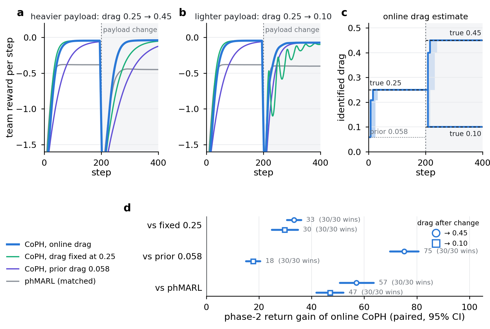
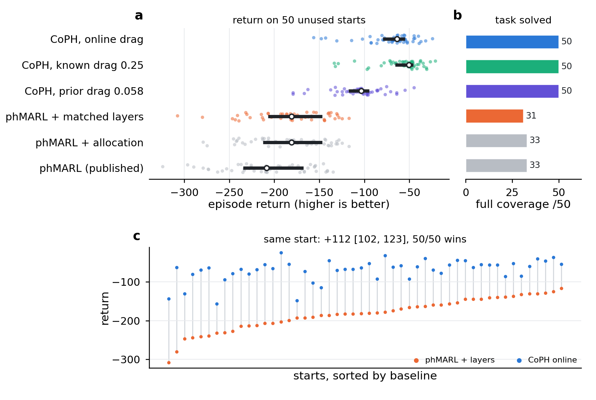
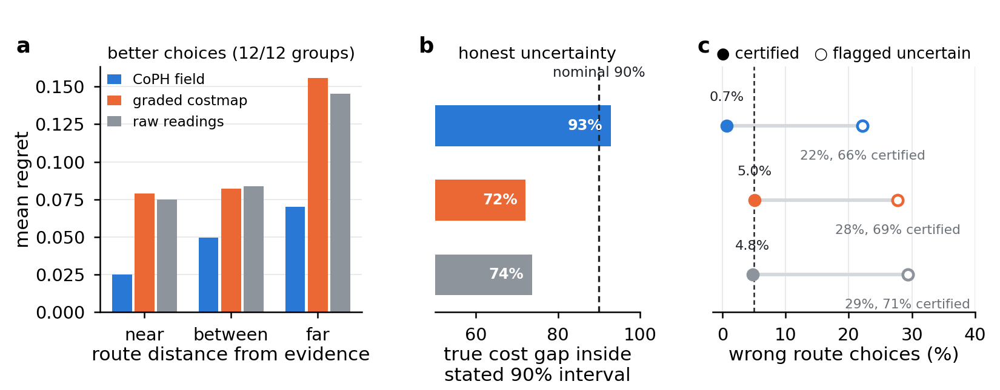
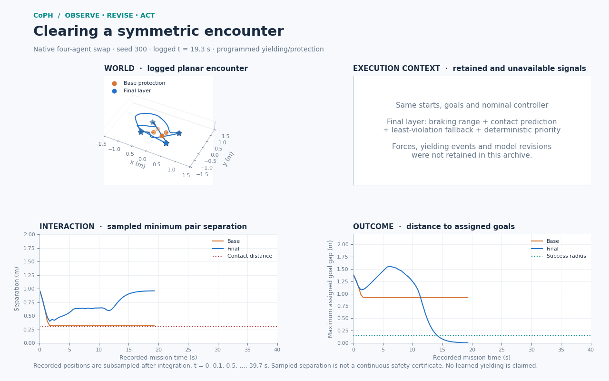

Figures and results
Results from the archived studies. The scenario tabs link directly to the corresponding figure or table.
Surprise and recovery

After a mid-mission drag change, online identification adapts while a fixed model becomes stale. Curves, paired returns and identification traces use the original study results.Matched native comparison

The original 50-start held-out comparison, with matched allocation, targets and protection. This cohort is distinct from the later 100-start evaluation.Route uncertainty

Saved-state path choices from identical evidence: route regret, uncertainty coverage and wrong-choice rates. These are not navigation episodes.| Representation | Choices certified | Wrong among certified | True gap inside nominal 90% interval |
|---|
| field | 65.7% | 0.7% | 92.9% |
| raw | 71.0% | 4.8% | 73.6% |
| costmap | 69.4% | 5.0% | 72.1% |
Hazard decisions
Original four-scene pilot. Carrier worst-case excess cost is measured against the best arm in the same scene; smaller is better. Raw readings match the learned field, and receiver fitting adds no demonstrated navigation benefit here.
| Shared content | Worst-case carrier excess cost |
|---|
| Learned field | 4.6 |
| Raw readings | 4.6 |
| Field without receiver fitting | 4.6 |
| Scout’s avoid/free decision | 25.3 |
| No communication | 68.1 |
Reciprocal discovery
In the displayed controlled crossing, reciprocal warnings save 27.1 m of team detour relative to no communication. This is a layout-specific result.

Protected encounters
| Evaluation | Completion | Contacts |
|---|
| Final layer, each encounter family | 30/30 | 0 |
| Old layer, four-agent swap | 0/30 | See full study records |
Yielding is programmed. Priority can increase crossing time; it is not evidence of learned strategy discovery.
